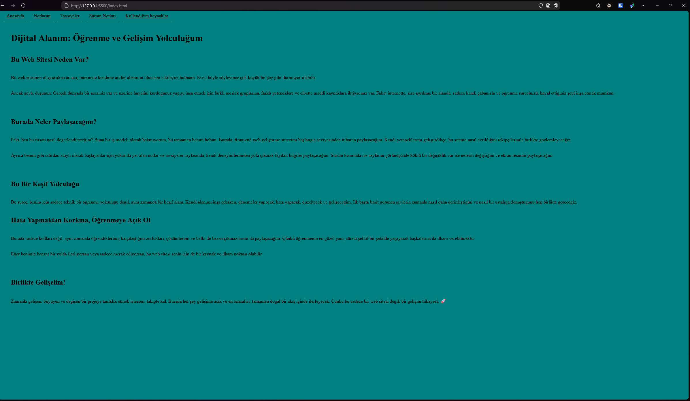

V1 detaylarını gör
İlk sürümde websitesinin sadece html kullanarak iskeleti oluşturuldu henüz bir css koduna sahip değil ve görünümü şu şekilde

İlk sürümde websitesinin sadece html kullanarak iskeleti oluşturuldu henüz bir css koduna sahip değil ve görünümü şu şekilde
Anasayfaya bir arka plan rengi eklemek için css dosyasına şu kodu ekledim
body {
background-color: teal;
}
Ana sayfam çok düz ve kötü görünüyordu ve metinler sayfanın soluna yapışık halde duruyordu ufakda olsa metinlere bir düzen vermek için öğrendiğim birkaç css kodunu kullandım
h1, h2, p {
text-align: left;
padding: 10px;
margin-left: 25px;
}
Eski halinde birbirlerine yapışık görünüyordu aralarına açmak için oluşturduğum nav sınıfını kullanarak css'e şöyle bir kod ve linklerin rengini sabitleyip altına bir çizgi eklemek için border-bottom kullandım
.nav {
text-align: left;
padding: 10px;
margin-left: 10px;
}
a:visited, a:link {
color: black;
border-bottom: solid 1px black;
}
Henüz navigasyon bar yapmayı bilmiyorum o yüzden bunları bir a etiketine atayıp sınıf olarakta nav atadım bu kısımda kodları nasıl metin olarak göstereceğimi bilmediğim için chat gpt'den yardım aldım
<a class="nav" href="index.html">Anasayfa</a>
<a class="nav" href="not.html">Notlarım</a>
<a class="nav" href="tavsiyeler.html">Tavsiyeler</a>
<a class="nav" href="surum.html">Sürüm Notları</a>
<a class="nav" href="kaynaklar.html">Kullandığım kaynaklar</a>
Anasayfanın şuanki görünümü şu şekilde
